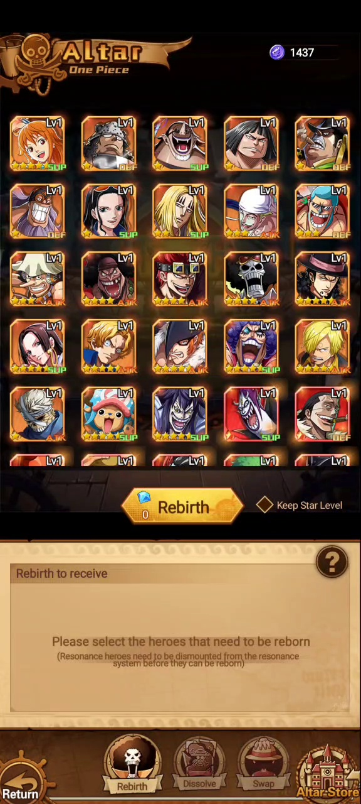
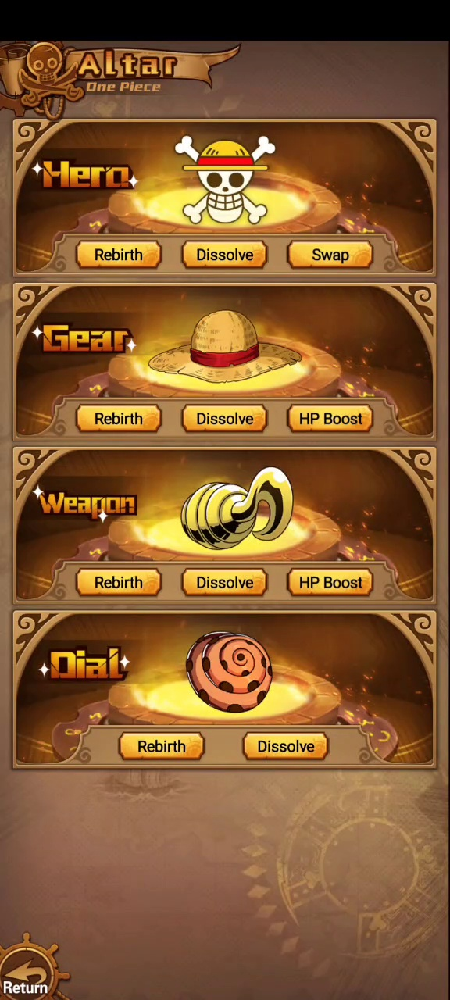
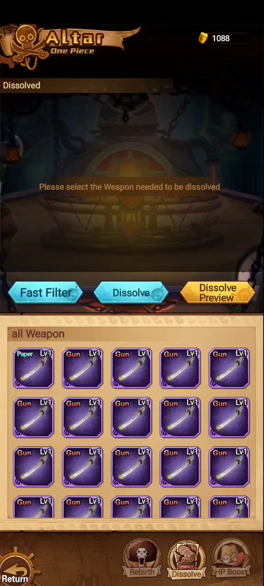

Rebirth
Confirmar que recursos devuelve y cuando conviene usarlo.
Reciclaje y reinicio
Altar agrupa sistemas para reiniciar, disolver, intercambiar y mejorar héroes, equipo, armas y diales.
Video analizado




Funciones
| Categoria | Funciones visibles | Notas |
|---|---|---|
| Hero | Rebirth, Dissolve, Swap | Rebirth permite seleccionar héroes y muestra Keep Star Level. |
| Gear | Rebirth, Dissolve, HP Boost | Equipo tiene una funcion de bono HP Boost. |
| Weapon | Rebirth, Dissolve, HP Boost | Dissolve muestra armas Paper/Gun Lv1 y preview. |
| Dial | Rebirth, Dissolve | Filtros por Impact, Flame, Tone, Breath, Water y Flash. |
| Altar Store | Tienda | Acceso visible desde el menu inferior de Altar. |
Pendiente
Confirmar que recursos devuelve y cuando conviene usarlo.
Confirmar monedas recibidas por héroes, armas, gear y dials.
Confirmar si es bono global de colección o mejora de item.